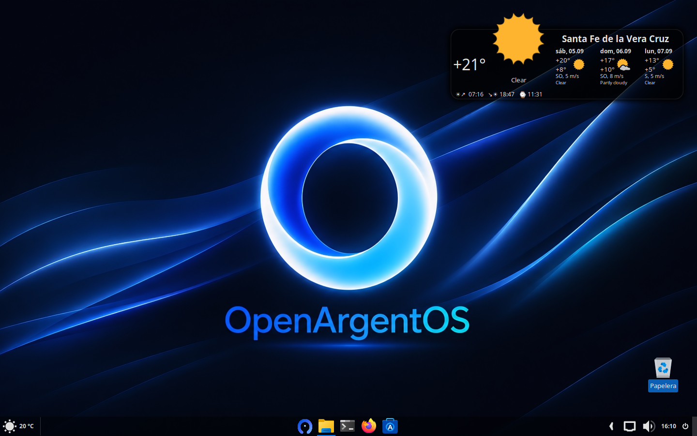
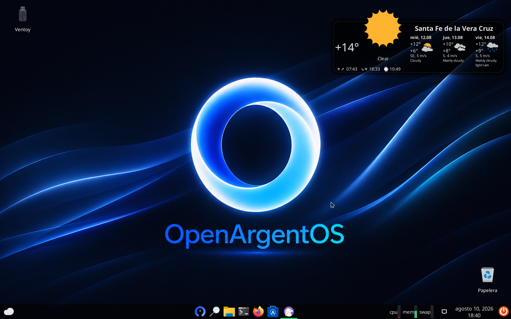

OpenArgentOS es una distribución basada en Debian Estable, armada para tu uso diario, el trabajo, la oficina, la escuela o universidad, trabajo con codigo, se adapta a tu ritmo — sin pedirte hardware nuevo para sentirse rápida.
Misma base, misma identidad, mismas herramientas — elegís según cuánta máquina tenés atrás.


Nada de armar el escritorio desde cero: se instala y ya está listo para taller, desarrollo o uso diario.
Panel propio, en GTK4 y Libadwaita, para monitorear el estado del equipo de un vistazo.
Gestión de repositorios externos sin tocar la terminal, hecha a medida para esta distro.
Lo necesario para correr aplicaciones de Windows ya está resuelto desde la primera sesión.
El instalador no es el genérico de Debian: tiene la imagen, los colores y la presentación de OpenArgentOS de punta a punta.
Convertí cualquier sitio en un acceso directo de escritorio propio, con su ícono y su ventana aparte.
| Componente | Mínimo | Recomendado |
|---|---|---|
| Procesador | 64-bit Dual Core | 64-bit Quad Core |
| Memoria RAM | 2 GB | 4 GB o superior |
| Almacenamiento | 15 GB (HDD) | 20 GB (SSD) |
| Pantalla | 1024 × 768 | 1920 × 1080 |
Alojadas en Mediafire. Grabalas a un pendrive con Ventoy, Rufus o dd, y arrancá desde ahí.
Al arrancar el sistema live y abrir "Install System" te va a pedir una contraseña de administrador. Usá: opendash
OpenArgentOS lo desarrolla y mantiene Gustavo, de forma independiente, desde Santa Fe de la Vera Cruz. El código, el instalador y las aplicaciones propias están todos publicados en GitHub — cualquiera puede revisarlos, reportar un problema o proponer un cambio.
github.com/Tavo78ok